작은 별의 길
선택한 2번 시안을 실제 Flutter·Flame 게임에 적용한 화면입니다. 아래 그림은 Flutter widget renderer의 출력입니다. 브라우저나 Android 실기기 캡처는 아닙니다.
구현·실행 결과 · 시안 비교 QA
선택 시안과 실제 구현
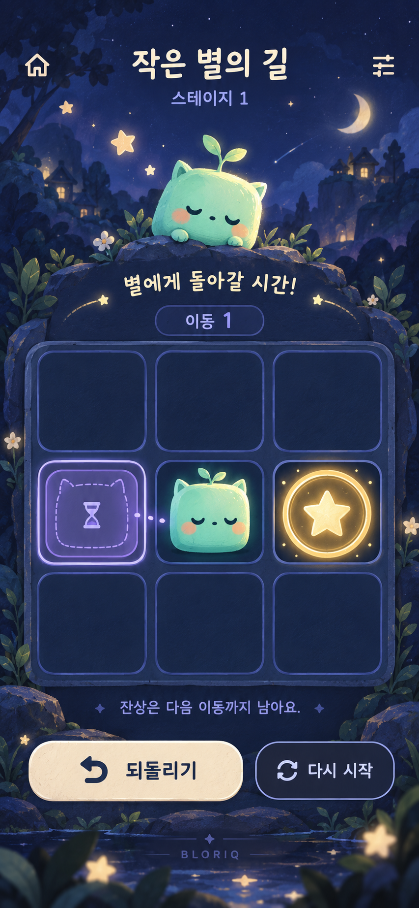
선택한 시안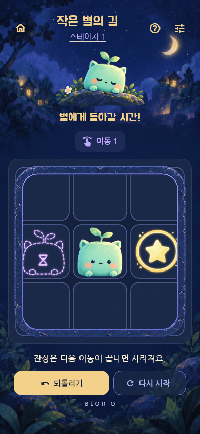
실제 게임 · Dark / 한국어전체 화면
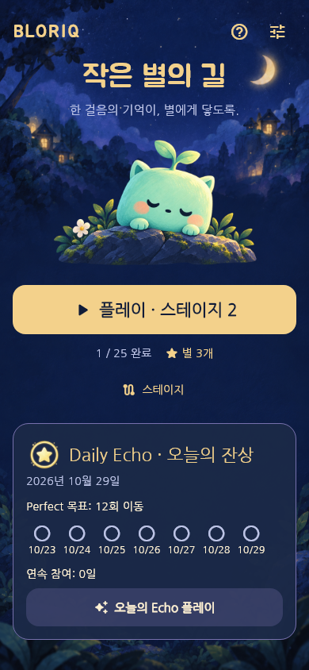
홈게임 플레이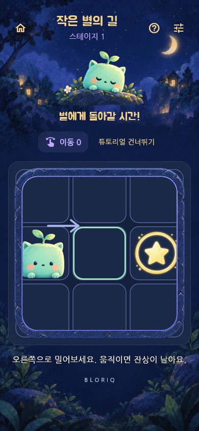
튜토리얼 · 첫 이동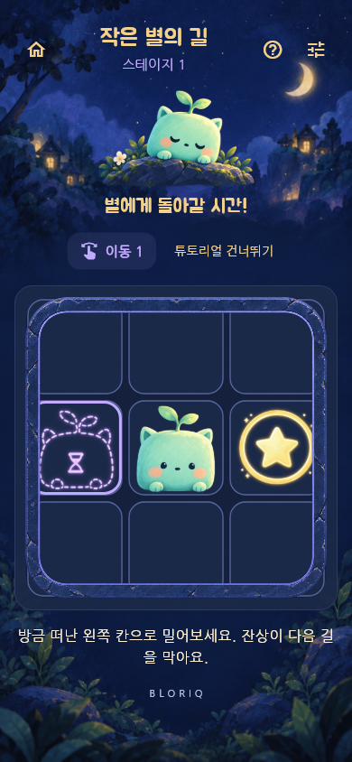
튜토리얼 · 잔상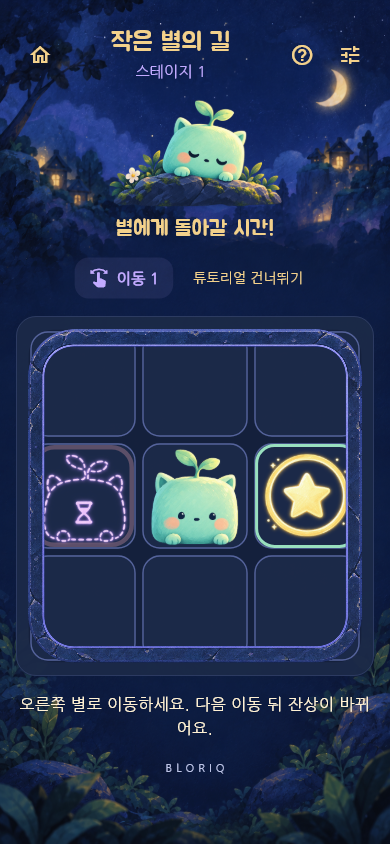
튜토리얼 · 출구Daily · 최근 7일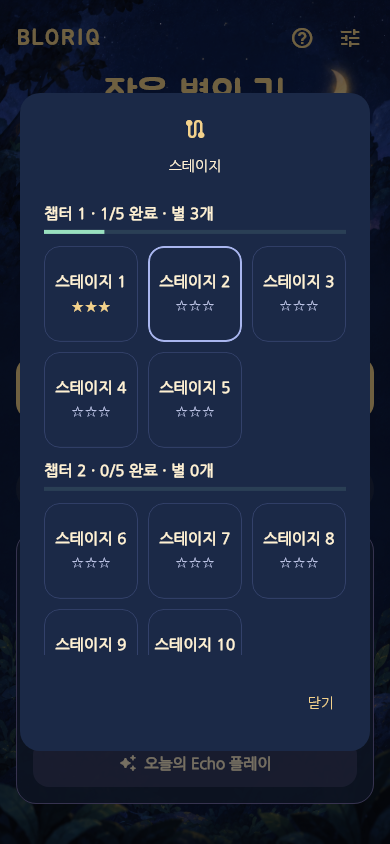
스테이지 · 챕터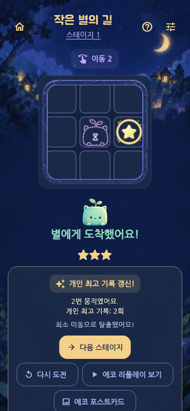
클리어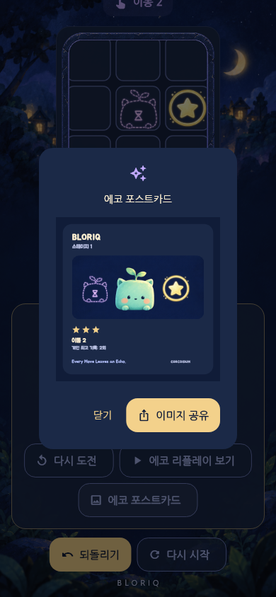
포스트카드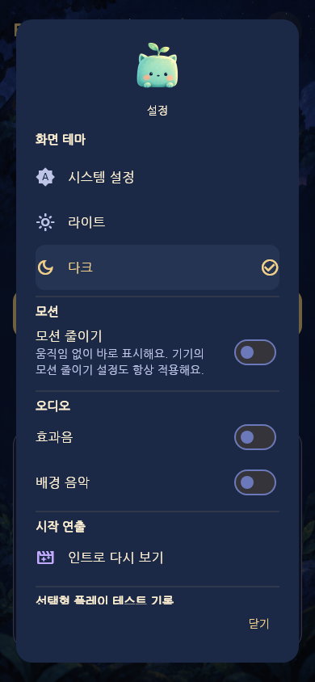
설정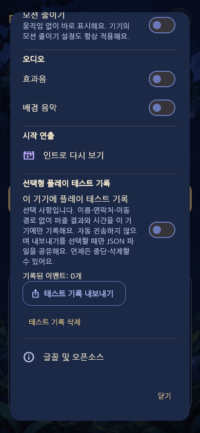
테스트 기록 설정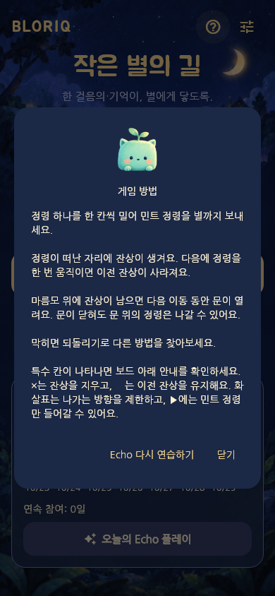
게임 방법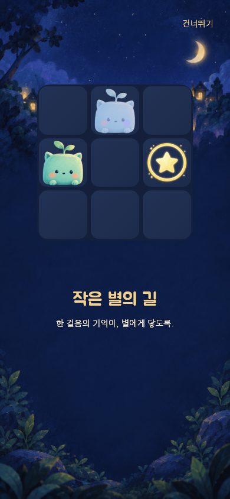
인트로 · 시작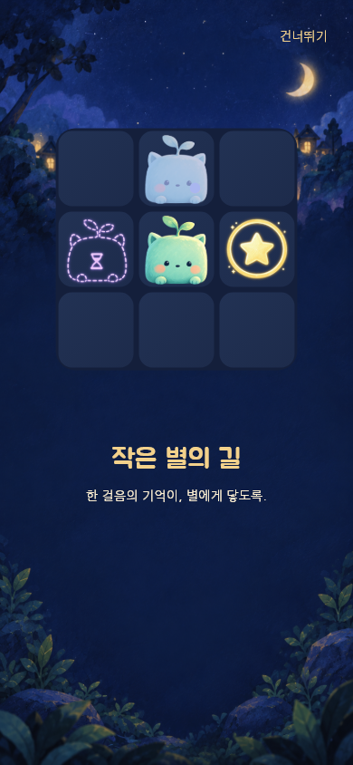
인트로 · 잔상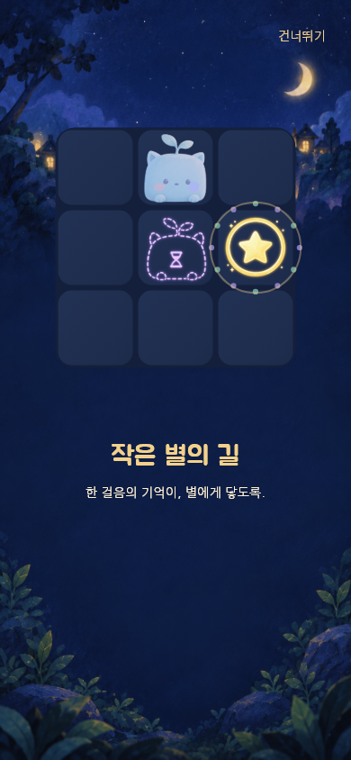
인트로 · 별빛